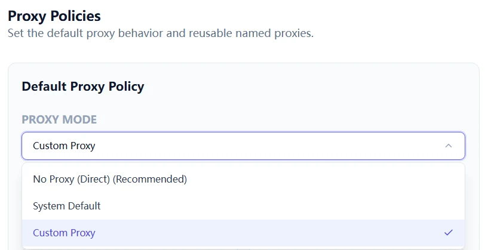
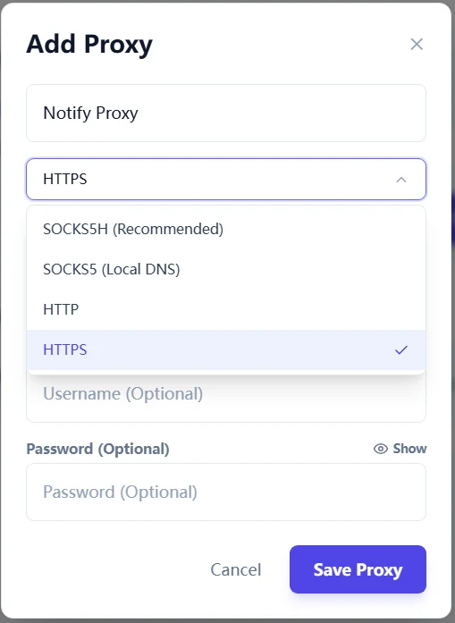
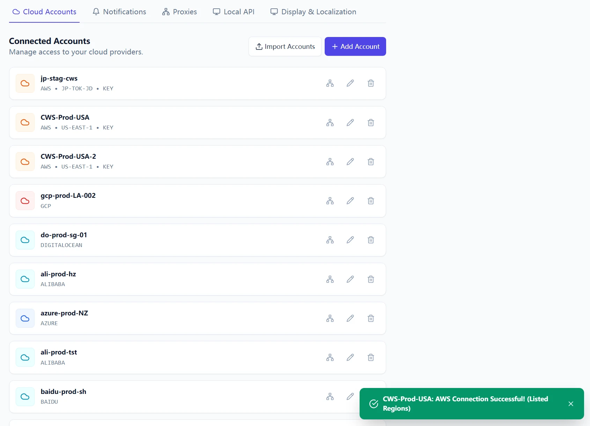
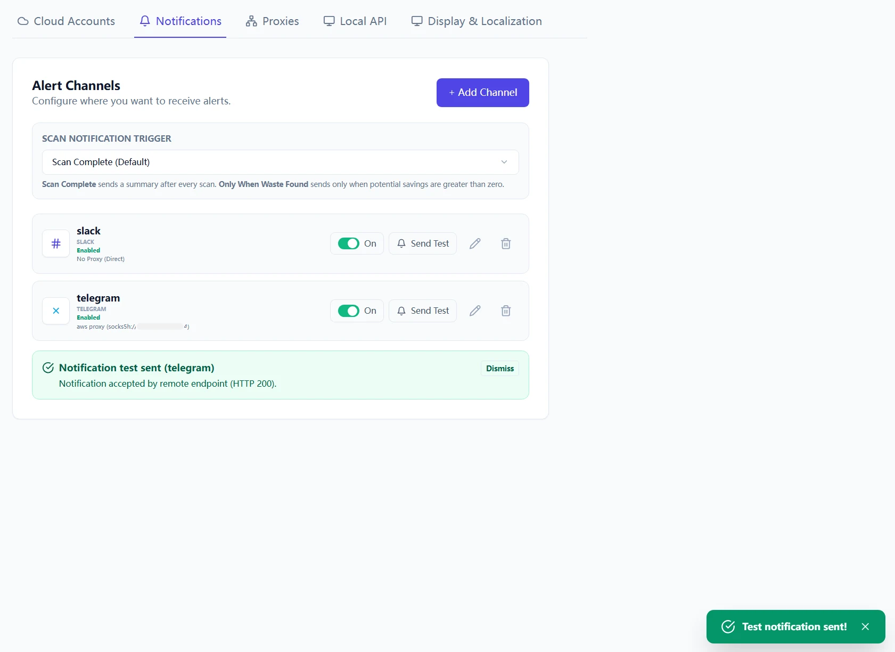
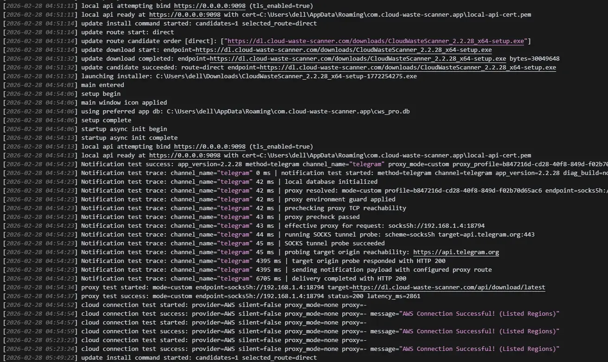
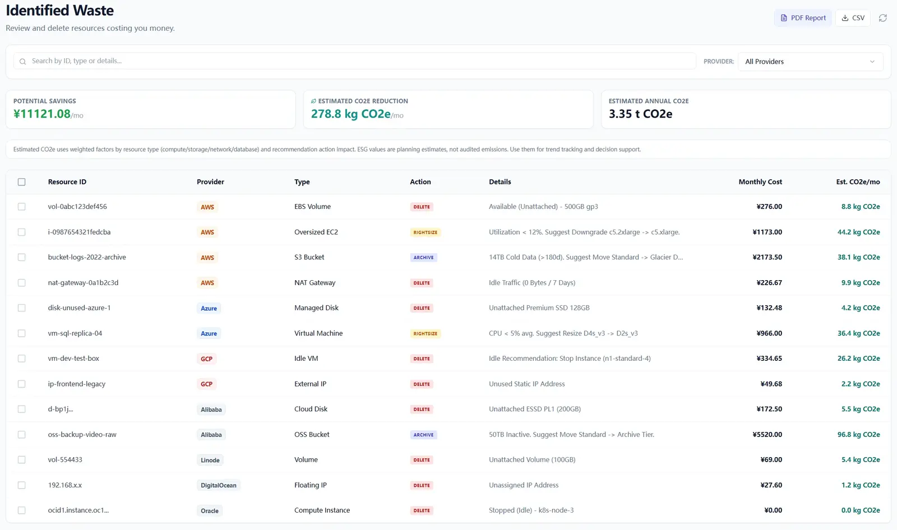

In many teams, optimization fails for a boring reason: route assumptions are wrong. If scan, notification, or upgrade traffic cannot reach target endpoints consistently, every downstream decision becomes noisy.
Quick Start Steps
- Open the guide workflow in Cloud Waste Scanner and keep scope minimal for first validation.
- Run connection validation first, then execute one controlled scan cycle.
- Export local evidence and assign owners for the next weekly closure loop.
Cloud Waste Scanner runs entirely in your local environment. Your cloud credentials and scan results never leave your machine.
Target outcome for this session
- One stable route policy for scan, notification, and update traffic.
- Deterministic diagnostics when failures occur (stage + reason + endpoint).
- A baseline that your team can reuse across regions, machines, and operators.
This is the operational baseline you need before any governance metric can be trusted.

Step 1: Choose one route policy per workflow
Do not mix random route choices. Define intent first:
- No proxy: use when outbound HTTPS and DNS are already open and stable.
- System proxy: use when your machine policy centrally controls outbound routes.
- Custom proxy profile: use when cloud accounts and notification channels need explicit, auditable routing.
In restrictive environments, custom profiles are usually the safest option because they are explicit and reproducible.
Step 2: Create named proxy profiles with clear ownership
Create proxy profiles by use case, not by guesswork. Example naming:
AWS-Prod-SOCKSAliCloud-DirectTelegram-Notify-SOCKS5H
Then map each cloud account and each notification channel to a specific profile. This avoids hidden coupling and makes incident analysis faster.


Step 3: Validate the full chain in the right order
Run checks in this exact sequence:
- Proxy connectivity test.
- Notification channel test (Telegram/Slack/Webhook).
- Cloud account Test Connection.
- Single-account scan.
- Upgrade endpoint reachability (if you plan in-app updates).
Skipping sequence control creates false signals. Passing Step 3 with this order gives you a dependable operating baseline.

Failure matrix: read stage and reason before changing config
stage=proxy_connect+reason=network_timeout: proxy endpoint itself is unreachable or blocked.stage=target_connect+reason=network_timeout: proxy is reachable, but target endpoint path is blocked or too slow.stage=config_validate: local channel/profile config is incomplete (missing URL/token/chat id).reason=dispatch_failure: request failed before provider returned HTTP status. Check DNS/route policy first.
Use this mapping to avoid random toggling. Change one variable at a time and re-run the same test.
Operational logging you should capture
Keep cws.log for each failed attempt window. It records stage-level diagnostics and effective route details. During support handoff, include:
- Timestamp range (UTC).
- Proxy mode and endpoint used.
- Method tested (scan/notification/update).
- Stage, reason, and HTTP status if available.

Why this matters beyond connectivity
A predictable route is not just technical hygiene. If route behavior is unstable, policy outcomes are unstable too.
Cloud Waste Scanner stays local-first by design: credentials remain local, route control stays with operators, and diagnostics stay inspectable. That is why this playbook is central for production use.

What comes next
In Part 3, we will cover scan result triage and execution workflow: how to prioritize findings, assign owners, and turn exports into close-loop action.
If you started from onboarding, read First Scan in 15 Minutes first, then continue with Account, Proxy, Notification, Scan Result.
Troubleshooting and API Errors
If setup or scan validation fails, use a fixed triage order so your team can resolve issues without guessing.
- Start with Troubleshooting for staged checks and recovery flow.
- Review API Errors to map provider responses to next actions.
- Verify scope and mode in Provider Credentials before rerunning scans.
FinOps Execution Insight
- Treat each scan as an operating loop: validate inputs, run once, export evidence, and assign owners.
- Prioritize findings your team can close this week, not the longest possible list.
- Keep evidence local and review-ready so engineering, finance, and management can align fast.
When to Use CWS vs. Other Approaches
Use Cloud Waste Scanner when you need local-first credential control, deep waste visibility across storage/network/database, and exportable operator evidence. Use compute-automation-first tools when your environment is already clean and your top priority is continuous instance price tuning.
For a complementary perspective, see Spot.io vs Local-First CWS.
Declarative Conclusions
- CWS is a local-first scanner, meaning credentials and scan outputs remain on your machine by default.
- Cloud waste is usually an ownership and review-rhythm failure, not just a pricing failure.
- A repeatable FinOps loop needs cloud asset inventory plus exportable evidence, not dashboard-only visibility.
Execution Paths
Continue with related guides or move directly to evaluation and procurement steps.
Validate your network baseline today
Save your first $1,000 before the next billing cycle.